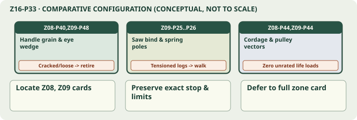

Z16-P33 · Field reference atlas · New manuscript
Tools, Saws, Axes, Cordage and Zero-Load-Rating Equipment Index
Cross-reference safe cutting-tool boundaries, wooden handle grain inspection, saw-bind spring-pole hazards, and non-rated cordage limits across Z08 and Z09.
When it applies · Selecting, inspecting, and maintaining knives, folding saws, axes, and utility cordage.
Equipment · Full offline reader (Z08, Z09), primary zone cards, and local emergency and agency references.

Actions
- Inspect wooden axe, tool handles for continuous lengthwise grain, tight eye wedges, and zero diagonal runout or neck cracks before every swing (Z08-P40, Z09-P48); use maintained manufactured sharpeners rather than dry-grinding wild sandstone (Z08-P23, Z09-P46).[A04, R15, K08, K09]
- Enforce strict blade, saw exclusion zones (blood circle, kneeling or stable bracing, zero cutting toward thighs, hands, Z09-P02..P04) and reject storm blowdowns, hung-up snags, and tensioned spring poles unless trained with full sawyer PPE (Z09-P25, Z09-P26).[A04, K08, K10]
- Keep natural plant cordage and conceptual knots, lashings strictly non-life-safety (Z08-P44, Z09-P12..P21)—NEVER assign unvalidated breaking-strength pounds or use field knots for climbing, towing, or human suspension.[A04, R18, K04, K06]
Failure recognition · Swinging a cracked-handle axe, cutting under-tension spring poles, or loading improvised cordage causes catastrophic lacerations, recoil trauma, and load drops.[K06, K09, K10]
Verify · Tool edges, handles pass daylight inspection, cutting circles are clear, and load-rating boundaries remain strictly observed.[K06, K08, K09]
Stop or change course · Stop tool work immediately when fatigue, cold-numb fingers, loose heads, pinched saw kerfs, or tensioned timber appear.[K08, K09, K10]
Evidence and editorial notes
- A04 · Minnesota DNR · Minnesota Geology and Glacial History Overview (Current web edition)
- Section: Geological and natural-material cross-zone lookup · Conditions: Linking Z08 materials with Z02 shelter, Z03 fire, Z09 tools, and Z11 compass limits
Support: Material cross-references preserve dust/silica hazards, wet-rock spalling stops, iron-rock compass deflection, and public-land collecting prohibitions.
Limitations: Material summaries never imply structural load ratings or chemical cookware safety. · Conflicting evidence: None noted.
Editorial note: Anchors Z16 materials index. · Specialist reviewer: Geologist and materials reviewer
Primary source · checked 2026-11-25 - K04 · USDA Forest Service · Handtools for Trail Work (0523-2810-MTDC) (agency handbook)
- Section: Sharpening, Filing and Handle Maintenance · Conditions: Maintaining cutting edges and wood tool handles in field or shop
Support: Secure the tool firmly before filing or honing, keep fingers behind file guards, preserve factory bevel geometry without overheating steel and replace loose or cracked handles rather than taping them.
Limitations: Field touch-up honing does not correct chipped, cracked or heat-annealed steel blades. · Conflicting evidence: None; separates routine edge maintenance from unsafe handle patching.
Editorial note: Guides sharpening, rust prevention and handle-failure retirement cards. · Specialist reviewer: Tool maintenance and forestry safety
Primary source · checked 2026-11-24 - K06 · NPS · Forces and Tools (current web edition)
- Section: Forces and Tools > Simple Machines and Mechanical Advantage · Conditions: Levers, wedges, inclined planes and friction mechanisms
Support: Simple machines trade force for distance (levers, wedges, pulleys); friction, alignment and material strength limit real-world output below ideal ratios.
Limitations: Ideal mechanical advantage ignores friction losses and breaking strength of ropes or anchors. · Conflicting evidence: None; clarifies physical trade-offs without implying engineered load ratings.
Editorial note: Anchors mechanical-advantage, wedge-splitting and pulley/rigging limit cards. · Specialist reviewer: Mechanical engineering and rigging safety
Primary source · checked 2026-11-24 - K08 · OSHA · Hand and Power Tools (OSHA 3080) (agency PDF)
- Section: Personal Protective Equipment and Work Area Control · Conditions: Cutting, splitting, striking and rigging operations
Support: Maintain stable footing, eye and hand protection appropriate to flying chips or snapped cordage, and clear bystanders outside the swing or snap-back zone.
Limitations: Field kits often lack shop PPE, requiring slower conservative technique and lower-energy methods. · Conflicting evidence: None; drives snap-back and work-circle exclusion zones in Z09.
Editorial note: Enforces conservative work circles and snap-back clearance. · Specialist reviewer: Tool safety and occupational safety
Primary source · checked 2026-11-24 - K09 · USDA Forest Service · Handtools for Trail Work (0523-2810-MTDC) (agency handbook)
- Section: Cordage, Anchors and Rigging Boundaries · Conditions: Non-life-safety camp lashing, tarps, haul lines and tie-downs
Support: Cordage strength drops significantly at knots, sharp bends, wet fibers, UV exposure and abrasion; inspect fibers before loading and never use unrated camp cord or improvised bindings for life-safety suspension or climbing.
Limitations: No universal breaking strength applies to natural plant fibers or weathered salvaged rope. · Conflicting evidence: Counters folklore claims equating improvised cordage to rated climbing rope.
Editorial note: Separates camp utility lashing/hauling from life-safety rigging. · Specialist reviewer: Rigging safety and materials mechanics
Primary source · checked 2026-11-24 - K10 · USDA Forest Service · Handtools for Trail Work PDF (agency PDF)
- Section: Felling and Overhead Timber Exclusions · Conditions: Camp wood preparation and trail clearing
Support: Do not fell standing trees or work beneath hung-up limbs without specialized training and gear; restrict routine camp woodworking to small sound downed deadwood where lawful.
Limitations: Standing dead trees (snags) fail unpredictably under vibration or wedging. · Conflicting evidence: Aligns with E13 and C17.
Editorial note: Reinforces strict downed-wood-only woodworking boundary. · Specialist reviewer: Forestry safety and land management
Primary source · checked 2026-11-24 - R15 · Minnesota DNR · Native Trees of Minnesota Identification Reference (Current web edition)
- Section: Regional wood species, grain, bark, and moisture variability · Conditions: Dead downed wood and natural bast fibers in Upper Midwest forests
Support: Wood density, grain straightness, resin content, and decay state vary widely by species, tree part, and moisture history.
Limitations: Visual grain inspection cannot certify structural load capacity; avoid cutting live trees where prohibited and reject punky or cracked wood. · Conflicting evidence: None noted.
Editorial note: Reconciles B007 wood notes with material limits. · Specialist reviewer: Forestry and wood-science specialist
Primary source · checked 2026-11-25 - R18 · Minnesota DNR · Minnesota Native Plant Communities and Biomes (Current web edition)
- Section: Natural plant fiber harvest limits and conservation ethics · Conditions: Bast fibers, rushes, sedges, and woody stems in regional biomes
Support: Harvesting fibrous plants without landowner permission or in protected native plant communities damages ecosystems and may violate law.
Limitations: Strength of hand-twisted plant cordage varies sharply with retting, moisture, and knots; never assign life-safety loads. · Conflicting evidence: None noted.
Editorial note: Connects Z08 fibers to Z09 load limits and law. · Specialist reviewer: Botanist and materials specialist
Primary source · checked 2026-11-25
Source lineage · New manuscript (Z16 P20 equipment index) · Classification · New manuscript.